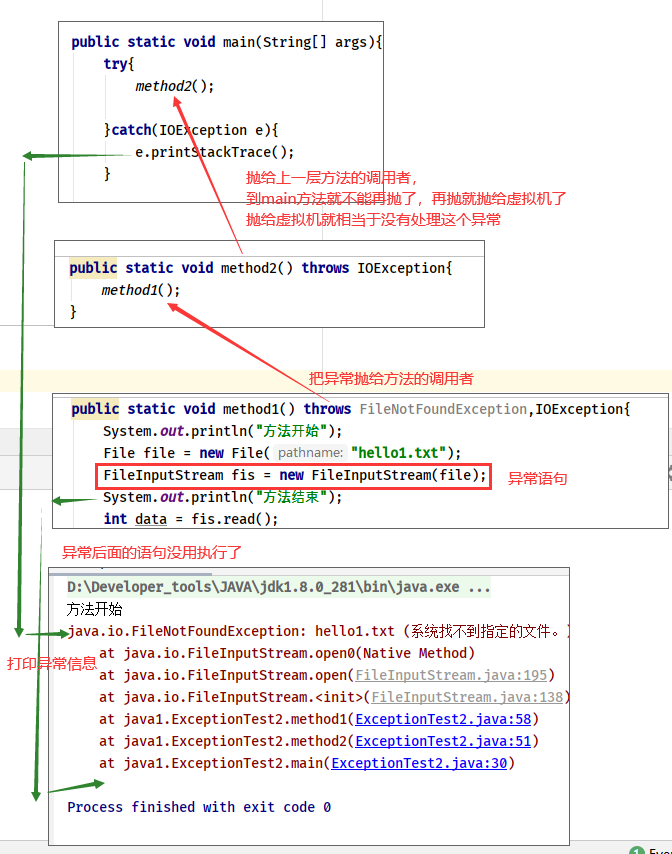

课程：宋红康 JAVA
什么是异常
异常指的是程序在执行过程中，出现的非正常的情况，如果不处理最终会导致 JVM 的非正常停止。
- 异常指的并不是语法错误，语法错了,编译不通过,不会产生字节码文件,根本不能运行。
- 异常也不是指逻辑代码错误而没有得到想要的结果，例如：求 a 与 b 的和，你写成了 a-b
异常的分类
Error：Java 虚拟机无法解决的严重问题。如：JVM 系统内部错误、资源耗尽等严重情况。比如：
StackOverflowError（栈溢出）和OOM（OutOfMemoryError：堆空间溢出）。一般不编写针对性的代码进行处理。Exception:其它因编程错误或偶然的外在因素导致的一般性问题，可以使用针对性的代码进行处理。例如：空指针访问、试图读取不存在的文件、网络连接中断、数组角标越界等等。
- 编译时期异常：在编译时期就会检查（checked 异常：受检异常），如果没有处理异常,则编译失败。这个如果用 cmd 去操作，会在运行 javac.exe 的时候报错，无法生成字节码文件。如果用 idea 编辑，那么在编辑的时候就会给出提示，说出这里有错误，叫你去改
- 运行时期异常：在运行时期检查异常，在编译时期，运行异常不会被编译器检测到(不报错：非受检异常（unchecked）)。(如数组索引越界异常，类型转换异常)。如果在 cmd 运行，文件在执行 javac.exe 的时候不会报错，会生成字节码文件，但在运行 java.exe 的时候报错。而在 idea 上体现在不会给出错误提示，需要等到运行代码的时候才会报错。程序员应该积极避免其出现的异常，而不是使用
try...catch处理，因为这类异常很普遍，若都使用try...catch或throws处理可能会对程序的可读性和运行效率产生影响。
异常处理的机制
为什么需要异常处理
在编写程序时，经常要在可能出现错误的地方加上检测的代码，如进行 x/y 运算时，要检测分母为 0，数据为空，输入的不是数据而是字符等。如果我们想完全规避这些错误情况，我们就需要写大量的 if-else 代码去判断，而过多的 if-else 分支会导致程序的代码加长、臃肿，可读性差。因此采用异常处理机制。
异常处理
Java 采用的异常处理机制，是将异常处理的程序代码集中在一起，与正常的程序代码分开，使得程序简洁、优雅，并易于维护。
抓抛模型
- 过程一：抛：程序在正常执行的过程中，一旦出现异常，就会在异常代码处生成一个对应异常类的对象，并将此对象抛出。一旦抛出对象以后，其后的代码就不再执行
- 过程二：抓：可以理解为异常的处理方式：① try-catch-finally ② throws
try-catch-finally
代码结构
try{ //可能出现异常的代码 }catch(异常类型1 变量名1){ //处理异常的方式1 }catch(异常类型2 变量名2){ //处理异常的方式2 e.getMessage(); //getMessage() 获取的是异常的信息，或者说异常发生的原因;返回的是一个String 类型 }catch(异常类型3 变量名3){ //处理异常的方式3 e.printStackTrace(); // printStackTrace与getMessage类似， //只是printStackTrace是自动打印，而且更加详细，并且还包含了getMessage的信息 //日志显示红色并不意味着就是代码错误，只是为了打印处理更加醒目， } .... finally{// 可选的 //一定会执行的代码 }catch 中的异常类型如果没有子父类关系，则谁声明在上，谁声明在下无所谓。catch 中的异常类型如果满足子父类关系，则要求子类一定声明在父类的上面。否则，报错
finally 中声明的是一定会被执行的代码。即使 catch 中又出现异常了，try 中有 return 语句，catch 中有
return 语句等情况finally 后面有语句也会执行，前提条件是 catch 住了抛出的异常
throws+异常类型
try-catch-finally:真正的将异常给处理掉了。throws 的方式只是将异常抛给了方法的调用者。 并没有真正将异常处理掉。
手动抛出异常：throw
- 关于异常对象的产生
- 系统自动生成的异常对象
- 手动的生成一个异常对象，并抛出（throw）
- 我们一般 throw Exception 或者 RuntimeException
throw new Exception()：包含了编译时异常throw new RuntimeException()：抛出的只是运行时异常
用户自定义异常
为什么需要自定义异常类:
我们说了 Java 中不同的异常类,分别表示着某一种具体的异常情况,那么在开发中总是有些异常情况是 Java 开发人员没有定义好的,此时我们根据自己业务的异常情况来定义异常类。例如年龄负数问题，考试成绩负数问题等等。那么能不能自己定义异常呢？可以
异常类如何定义：
- 自定义一个编译期异常：自定义类 并继承于
java.lang.Exception - 自定义一个运行时期的异常类:自定义类并继承于
java.lang.RuntimeException
- 自定义一个编译期异常：自定义类 并继承于
举例：
public class RegisterException extends Exception { //提供全局常量: serialversionUID static final long serialversionUID = -7034897193246939L; //空参构造 public RegisterException(){ } //message 表示异常提示 public RegisterException(String message){ //调用父类方法 super(message) ;//也可以不需要这个 } } public class Demo{ //模拟数据库中已存在账号 private static String[] names = {"bil","hill","jill"}; public static void main(String[] args){ //调用方法 try{ // 可能出现异常的代码 checkUsername("nill") ; System.out.println("注册成功)://如果没有异常就是注册成功"); }catch(RegisterException e){ //处理异常 e.printStackTrace(); } } //判断当前注册账号是否存在 //因为是编译期异常，又想调用者去处理 所以声明该异常 public static boolean checkUsername(String uname) throws RegisterException { for (int i=0; i<names.length; i++) { if(names[i].equals(uname)){//如果名字在这里面 就抛出登陆异常 throw new RegisterException("亲"+uname+"已经被注册了!"); } } return true; } }
转载请注明来源，欢迎对文章中的引用来源进行考证，欢迎指出任何有错误或不够清晰的表达。可以在下面评论区评论，也可以邮件至 1909773034@qq.com